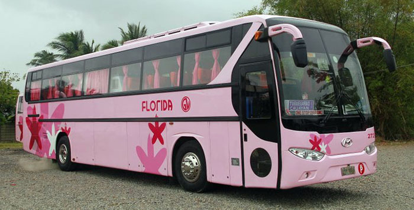

Exploring the top destinations in Zamboanga is possible if your schedule permits it, but it requires a well-prepared itinerary to make it possible. We recommend at least 4-6 days to pull this off. You can also choose to visit just one or two destinations in Zamboanga. Here’s a sample itinerary for Zamboanga that you can take inspiration from:
Sample Itinerary
Day 1: Arrival + City Tour
- 06:00 AM - Arrival at Zamboanga International
Airport - 06:30 AM – Breakfast at Jimmy’s Satti or
Johnny’s Morning Sun Satti - 07:00 AM - 12:00 PM – City tour before checking in at the hotel. You can drop your things at your hotel and try a heritage tour in Zamboanga (Fort Pilar Shrine, Zamboanga City Hall, Plaza Rizal, Metropolitan Cathedral of Zamboanga, Pasonanca Park, Camp Limbaga, El Museo de Zamboanga)
- 12:00 PM – Lunch at Alavar Seafood
Restaurant - 02:00 PM – Check-in at the hotel and
freshen up - 03:30 PM – Continue city tour (Yakan Weaving
Village, ZSCMST Bird Sanctuary) - 06:30 PM – Dinner at Bay Tal Mal
- 08:00 PM – Cap your night with a
Knickerbocker dessert at Paseo del Mar
Day 2: Sta Cruz Island (Pink Beach, Mangroves, and Vinta Ride)
- 07:00 am - Wake-up call and breakfast
- 08:30 am – Head to Paseo del Mar port to
register, listen to orientation, and
rent a boat to Sta. Cruz - 09:00 am – Arrival at Sta. Cruz Island (Beach bumming, lunch at the island, tour the lagoon and mangrove forest to see the stingless jellyfish and ride a vinta boat)
- 03:00 pm – Depart Sta. Cruz Island
- 03:30 pm – Back at Paseo del Mar
- 04:00 pm – Rest at the hotel and freshen up
- 06:00 pm – Dinner at Dennis Coffee Garden
- 08:00 pm – Enjoy the nightlife at Bar Code or
at Harley's Food and Craft Beers
Day 3: Once Islas
- 07:00 am - Wake-up call and breakfast
- 08:30 - 03:00 pm – Whole day of Once Islas
island hopping - 06:00 pm – Dinner Dennis Coffee Garden
- 08:00 pm – Enjoy the nightlife at Bar Code or
at Harley's Food and Craft Beers
Day 4: Merloquet Falls + Canelar Barter
- 07:00 am - Wake-up call and breakfast
- 08:00 am – Travel to Merloquet Falls
- 09:00 am – Swim and chill at Merloquet Falls
- 11:00 am – Travel back to Zamboanga City
- 12:00 pm – Lunch at La Vista del Mar
- 02:00 pm – Continue city tour, food tripping,
and shopping at Canelar Barter - 07:00 pm – Dinner
Best Time To Go There

Situated in Southern Mindanao, Zamboanga City usually avoids most of the typhoons that land in the Philippines all year-long, making it a sunny-weathered city. However, when a typhoon hits, expect flooding to occur in major roads.
So, please check the 7-day weather forecast before planning your trip. Rains do still occur during the monsoon months from June to early October. Climate conditions average from a low of 24 °C to a high of 33 °C.
Climate and Weather
You can expect a warm tropical climate almost all year round in Palawan, except in the rainy season, usually around July to September. The month with the most rainfall is during September. The warmest months are from March to April, with temperatures reaching 33°C. The month with the lowest degrees are from November to February with an average temperature of 23°C but is still dry.

How to Get There?
The province of Palawan and its top destinations are accessible via land, sea, and air travel. Puerto Princesa is often the gateway to the province of Palawan since more flights are going here than to other airports. Your choice of entry point will affect your budget and itinerary, so it's best to look into which place best fits your preferences.
By Flights
While there are still no international flights available, Zamboanga International Airport (ZAM) is well-connected to other domestic cities by air.
Philippine Airlines flies daily to Zamboanga from Manila and Davao while Cebu Pacific Air has flights from Manila, Davao, Cebu, Tawi-Tawi, and Cotabato City.
By Bus
Daily buses from Ozamis, Dapitan, Cagayan de Oro, Iligan, and Pagadian take travelers to Zamboanga Integrated Transport Terminal. The main bus line plying the route of Zamboanga City to other places in Mindanao is Rural Transit Bus.
Their buses are painted with a reddish and orange livery. Bus travel from Cebu and Bacolod is also possible on a Ceres Bus Liner via a RORO ferry connection.
By Ferry

2GO Travel ferries passengers every Sunday from Manila's Pier 4 to Zamboanga City. Travel time is around 40-45 hours. 2GO also has passenger ships sailing to Zamboanga from Cebu, Dumaguete, Davao, Dipolog, Iloilo and General Santos. Schedules from these destinations vary from weekly to bi-weekly only.
The Port of Zamboanga is considered as an international port of entry. It services sea routes from Sandakan, Malaysia via the Aleson Shipping Company. Other sea travel options include Weesam, Montenegro and Aleson passenger ferries from Jolo in Sulu, Bongao in Tawi-Tawi and Isabela City in Basilan.